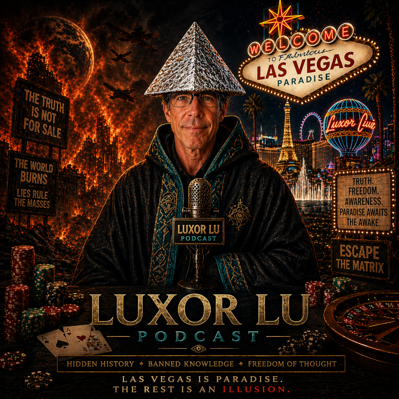

Luxor Lu Podcast

🎙️ Conspiracy Resource — 150 Topic Master List
🧠 Systems, Power, and Control
- Mind Control
- Shill / Dis-info Agents
- Two Party System
- Deep State
- Intelligence Agencies (CIA, FBI, etc.)
- Surveillance Society
- Social Credit Systems
- Digital ID Systems
- Predictive Programming
- Psychological Operations (PsyOps)
- Manufactured Consent
- False Flag Events
- Crisis Actors
- Information Warfare
- Censorship & Algorithm Control
- Controlled Opposition
- Whistleblowers
- Government Transparency vs Secrecy
💰 Money, Economy, and Influence
- Muammar Gaddafi
- Central Banking Systems
- Federal Reserve
- Inflation as Control
- Cashless Society
- Cryptocurrency & Control
- Wealth Concentration
- Corporate Influence in Government
- Lobbying Power
- Economic Crashes (planned or not)
- Debt as a Tool
- Universal Basic Income
- Resource Control (oil, water, minerals)
🌍 History Revisited
- September 11
- Presidential Assassinations
- WWI
- WWII
- Vietnam War
- Hidden History
- Timeline Manipulation
- Lost Civilizations
- Atlantis
- Tartaria
- Great Fires (Chicago, San Francisco, etc.)
- Library of Alexandria
- Historical Revisionism
- Suppressed Archaeology
- Giants in History
- Smithsonian Cover-ups
- Alternative Chronologies
🏛️ Architecture & Civilization
- Star Forts
- Old World Buildings
- Mud Flood
- Chicago’s World Fair
- Megalithic Structures
- Pyramids Worldwide
- Cathedrals & Energy Theories
- Orphan Trains
- Underground Cities
- Tunnel Networks
- Capitol Buildings Symbolism
- World Expositions (expanded)
- Abandoned Cities
🧬 Science, Health, and Reality
- Nuclear Weapons / Energy
- Chem-trails
- Big Pharma
- Medical Industry Incentives
- Vaccines Debate (discussion topic)
- Fluoride in Water
- Food Supply Manipulation
- GMOs
- Longevity Suppression
- Alternative Medicine Suppression
- Frequencies & Healing
- Placebo Effect Power
- Human Potential Limits
🧠 Mind, Consciousness, and Perception
- Density Shift
- Mandela Effect
- Simulation Theory
- Reality as Perception
- Consciousness Expansion
- Dreams & Lucid Dreaming
- Remote Viewing
- Psychic Phenomena
- Mass Suggestion
- Cognitive Dissonance
- Groupthink
- Belief Systems
- Fear as Control
- Identity & Ego
📡 Technology & the Future
- Artificial Intelligence Control
- Automation & Job Loss
- Smart Cities
- Internet Control
- 5G Concerns
- Transhumanism
- Brain-Computer Interfaces
- Data Harvesting
- Facial Recognition
- Digital Addiction
- Virtual Reality Worlds
🛸 Space, Aliens, and Unknowns
- Moon Landing / Space Travel
- UFO/UAP Disclosure
- Extraterrestrial Contact
- Ancient Aliens
- Secret Space Programs
- Antarctica Mysteries
- Mars Missions Truth
- Satellite Systems
- Black Projects
- Area 51
- Interdimensional Beings
⚖️ Society, Culture, and Media
- Pride
- Sobriety
- Media Narratives
- Celebrity Influence
- Entertainment Industry Control
- Music Industry Messaging
- Social Media Manipulation
- Cancel Culture
- Cultural Engineering
- Education System Design
- Public School Conditioning
- Language Framing
⚔️ War, Conflict, and Global Strategy
- Military Industrial Complex
- Proxy Wars
- War as Business
- Draft & Recruitment Narratives
- Defense Spending
- Classified Weapons
- Cyber Warfare
- Biological Warfare
🧭 Philosophy, Morality, and Spiritual Themes
- God / Church
- Fallen Angels
- Flat Earth
- Free Will vs Determinism
- Good vs Evil Frameworks
- Sin and Redemption
- Spiritual Warfare
- Pride and Ego
- Meaning of Truth
- Faith vs Evidence
- Moral Relativism
🧩 Meta-Conspiracy Topics
- Why people believe conspiracies
- Disinformation vs Truth
- How narratives spread
- Trust in institutions
- Personal awakening stories
- Skepticism vs Cynicism
- The role of doubt
- Finding balance in belief
- What is truth in the modern world